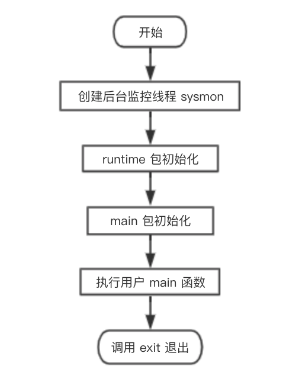

上一讲说到调度器将 main goroutine 推上舞台，为它铺好了道路，开始执行 runtime.main 函数。这一讲，我们探索 main goroutine 以及普通 goroutine 从执行到退出的整个过程。
1
2
3
4
5
6
7
8
9
10
11
12
13
14
15
16
17
18
19
20
21
22
23
24
25
26
27
28
29
30
31
32
33
34
35
36
37
38
39
40
41
42
43
44
45
46
47
48
49
50
51
52
53
54
55
56
57
58
59
60
61
62
63
64
65
66
67
68
69
70
71
72
73
74
75
76
77
78
79
|
// The main goroutine.
func main() {
// g = main goroutine，不再是 g0 了
g := getg()
// ……………………
if sys.PtrSize == 8 {
maxstacksize = 1000000000
} else {
maxstacksize = 250000000
}
// Allow newproc to start new Ms.
mainStarted = true
systemstack(func() {
// 创建监控线程，该线程独立于调度器，不需要跟 p 关联即可运行
newm(sysmon, nil)
})
lockOSThread()
if g.m != &m0 {
throw("runtime.main not on m0")
}
// 调用 runtime 包的初始化函数，由编译器实现
runtime_init() // must be before defer
if nanotime() == 0 {
throw("nanotime returning zero")
}
// Defer unlock so that runtime.Goexit during init does the unlock too.
needUnlock := true
defer func() {
if needUnlock {
unlockOSThread()
}
}()
// Record when the world started. Must be after runtime_init
// because nanotime on some platforms depends on startNano.
runtimeInitTime = nanotime()
// 开启垃圾回收器
gcenable()
main_init_done = make(chan bool)
// ……………………
// main 包的初始化，递归的调用我们 import 进来的包的初始化函数
fn := main_init
fn()
close(main_init_done)
needUnlock = false
unlockOSThread()
// ……………………
// 调用 main.main 函数
fn = main_main
fn()
if raceenabled {
racefini()
}
// ……………………
// 进入系统调用，退出进程，可以看出 main goroutine 并未返回，而是直接进入系统调用退出进程了
exit(0)
// 保护性代码，如果 exit 意外返回，下面的代码会让该进程 crash 死掉
for {
var x *int32
*x = 0
}
}
|
main 函数执行流程如下图：

从流程图可知，main goroutine 执行完之后就直接调用 exit(0) 退出了，这会导致整个进程退出，太粗暴了。
不过，main goroutine 实际上就是代表用户的 main 函数，它都执行完了，肯定是用户的任务都执行完了，直接退出就可以了，就算有其他的 goroutine 没执行完，同样会直接退出。
1
2
3
4
5
6
7
|
package main
import "fmt"
func main() {
go func() {fmt.Println("hello qcrao.com")}()
}
|
在这个例子中，main goroutine 退出时，还来不及执行 go 出去 的函数，整个进程就直接退出了，打印语句不会执行。因此，main goroutine 不会等待其他 goroutine 执行完再退出，知道这个有时能解释一些现象，比如上面那个例子。
这时，心中可能会跳出疑问，我们在新创建 goroutine 的时候，不是整出了个“偷天换日”，风风火火地设置了 goroutine 退出时应该跳到 runtime.goexit 函数吗，怎么这会不用了，闲得慌？
回顾一下上一讲的内容，跳转到 main 函数的两行代码：
1
2
3
4
|
// 把 sched.pc 值放入 BX 寄存器
MOVQ gobuf_pc(BX), BX
// JMP 把 BX 寄存器的包含的地址值放入 CPU 的 IP 寄存器，于是，CPU 跳转到该地址继续执行指令
JMP BX
|
直接使用了一个跳转，并没有使用 CALL 指令，而 runtime.main 函数中确实也没有 RET 返回的指令。所以，main goroutine 执行完后，直接调用 exit(0) 退出整个进程。
那之前整地“偷天换日”还有用吗？有的！这是针对非 main goroutine 起作用。
参考资料【阿波张 非 goroutine 的退出】中用调试工具验证了非 main goroutine 的退出，感兴趣的可以去跟着实践一遍。
我们继续探索非 main goroutine （后文我们就称 gp 好了）的退出流程。
gp 执行完后，RET 指令弹出 goexit 函数地址（实际上是 funcPC(goexit)+1），CPU 跳转到 goexit 的第二条指令继续执行：
1
2
3
4
5
6
7
8
9
|
// src/runtime/asm_amd64.s
// The top-most function running on a goroutine
// returns to goexit+PCQuantum.
TEXT runtime·goexit(SB),NOSPLIT,$0-0
BYTE $0x90 // NOP
CALL runtime·goexit1(SB) // does not return
// traceback from goexit1 must hit code range of goexit
BYTE $0x90 // NOP
|
直接调用 runtime·goexit1：
1
2
3
4
5
6
|
// src/runtime/proc.go
// Finishes execution of the current goroutine.
func goexit1() {
// ……………………
mcall(goexit0)
}
|
调用 mcall 函数：
1
2
3
4
5
6
7
8
9
10
11
12
13
14
15
16
17
18
19
20
21
22
23
24
25
26
27
28
29
30
31
32
33
34
35
36
37
38
39
40
41
42
43
44
|
// 切换到 g0 栈，执行 fn(g)
// Fn 不能返回
TEXT runtime·mcall(SB), NOSPLIT, $0-8
// 取出参数的值放入 DI 寄存器，它是 funcval 对象的指针，此场景中 fn.fn 是 goexit0 的地址
MOVQ fn+0(FP), DI
get_tls(CX)
// AX = g
MOVQ g(CX), AX // save state in g->sched
// mcall 返回地址放入 BX
MOVQ 0(SP), BX // caller's PC
// g.sched.pc = BX，保存 g 的 PC
MOVQ BX, (g_sched+gobuf_pc)(AX)
LEAQ fn+0(FP), BX // caller's SP
// 保存 g 的 SP
MOVQ BX, (g_sched+gobuf_sp)(AX)
MOVQ AX, (g_sched+gobuf_g)(AX)
MOVQ BP, (g_sched+gobuf_bp)(AX)
// switch to m->g0 & its stack, call fn
MOVQ g(CX), BX
MOVQ g_m(BX), BX
// SI = g0
MOVQ m_g0(BX), SI
CMPQ SI, AX // if g == m->g0 call badmcall
JNE 3(PC)
MOVQ $runtime·badmcall(SB), AX
JMP AX
// 把 g0 的地址设置到线程本地存储中
MOVQ SI, g(CX) // g = m->g0
// 从 g 的栈切换到了 g0 的栈D
MOVQ (g_sched+gobuf_sp)(SI), SP // sp = m->g0->sched.sp
// AX = g，参数入栈
PUSHQ AX
MOVQ DI, DX
// DI 是结构体 funcval 实例对象的指针，它的第一个成员才是 goexit0 的地址
// 读取第一个成员到 DI 寄存器
MOVQ 0(DI), DI
// 调用 goexit0(g)
CALL DI
POPQ AX
MOVQ $runtime·badmcall2(SB), AX
JMP AX
RET
|
函数参数是：
1
2
3
4
|
type funcval struct {
fn uintptr
// variable-size, fn-specific data here
}
|
字段 fn 就表示 goexit0 函数的地址。
L5 将函数参数保存到 DI 寄存器，这里 fn.fn 就是 goexit0 的地址。
L7 将 tls 保存到 CX 寄存器，L9 将 当前线程指向的 goroutine （非 main goroutine，称为 gp）保存到 AX 寄存器，L11 将调用者（调用 mcall 函数）的栈顶，这里就是 mcall 完成后的返回地址，存入 BX 寄存器。
L13 将 mcall 的返回地址保存到 gp 的 g.sched.pc 字段，L14 将 gp 的栈顶，也就是 SP 保存到 BX 寄存器，L16 将 SP 保存到 gp 的 g.sched.sp 字段，L17 将 g 保存到 gp 的 g.sched.g 字段，L18 将 BP 保存 到 gp 的 g.sched.bp 字段。这一段主要是保存 gp 的调度信息。
L21 将当前指向的 g 保存到 BX 寄存器，L22 将 g.m 字段保存到 BX 寄存器，L23 将 g.m.g0 字段保存到 SI，g.m.g0 就是当前工作线程的 g0。
现在，SI = g0， AX = gp，L25 判断 gp 是否是 g0，如果 gp == g0 说明有问题，执行 runtime·badmcall。正常情况下，PC 值加 3，跳过下面的两条指令，直接到达 L30。
L30 将 g0 的地址设置到线程本地存储中，L32 将 g0.SP 设置到 CPU 的 SP 寄存器，这也就意味着我们从 gp 栈切换到了 g0 的栈，要变天了！
L34 将参数 gp 入栈，为调用 goexit0 构造参数。L35 将 DI 寄存器的内容设置到 DX 寄存器，DI 是结构体 funcval 实例对象的指针，它的第一个成员才是 goexit0 的地址。L36 读取 DI 第一成员，也就是 goexit0 函数的地址。
L40 调用 goexit0 函数，这已经是在 g0 栈上执行了，函数参数就是 gp。
到这里，就会去执行 goexit0 函数，注意，这里永远都不会返回。所以，在 CALL 指令后面，如果返回了，又会去调用 runtime.badmcall2 函数去处理意外情况。
来继续看 goexit0：
1
2
3
4
5
6
7
8
9
10
11
12
13
14
15
16
17
18
19
20
21
22
23
24
25
26
27
28
29
30
31
32
33
34
35
36
37
38
39
|
// goexit continuation on g0.
// 在 g0 上执行
func goexit0(gp *g) {
// g0
_g_ := getg()
casgstatus(gp, _Grunning, _Gdead)
if isSystemGoroutine(gp) {
atomic.Xadd(&sched.ngsys, -1)
}
// 清空 gp 的一些字段
gp.m = nil
gp.lockedm = nil
_g_.m.lockedg = nil
gp.paniconfault = false
gp._defer = nil // should be true already but just in case.
gp._panic = nil // non-nil for Goexit during panic. points at stack-allocated data.
gp.writebuf = nil
gp.waitreason = ""
gp.param = nil
gp.labels = nil
gp.timer = nil
// Note that gp's stack scan is now "valid" because it has no
// stack.
gp.gcscanvalid = true
// 解除 g 与 m 的关系
dropg()
if _g_.m.locked&^_LockExternal != 0 {
print("invalid m->locked = ", _g_.m.locked, "\n")
throw("internal lockOSThread error")
}
_g_.m.locked = 0
// 将 g 放入 free 队列缓存起来
gfput(_g_.m.p.ptr(), gp)
schedule()
}
|
它主要完成最后的清理工作：
- 把 g 的状态从
_Grunning 更新为 _Gdead；
- 清空 g 的一些字段；
- 调用 dropg 函数解除 g 和 m 之间的关系，其实就是设置 g->m = nil, m->currg = nil；
- 把 g 放入 p 的 freeg 队列缓存起来供下次创建 g 时快速获取而不用从内存分配。freeg 就是 g 的一个对象池；
- 调用 schedule 函数再次进行调度。
到这里，gp 就完成了它的历史使命，功成身退，进入了 goroutine 缓存池，待下次有任务再重新启用。
而工作线程，又继续调用 schedule 函数进行新一轮的调度，整个过程形成了一个循环。
总结一下，main goroutine 和普通 goroutine 的退出过程：
对于 main goroutine，在执行完用户定义的 main 函数的所有代码后，直接调用 exit(0) 退出整个进程，非常霸道。
对于普通 goroutine 则没这么“舒服”，需要经历一系列的过程。先是跳转到提前设置好的 goexit 函数的第二条指令，然后调用 runtime.goexit1，接着调用 mcall(goexit0)，而 mcall 函数会切换到 g0 栈，运行 goexit0 函数，清理 goroutine 的一些字段，并将其添加到 goroutine 缓存池里，然后进入 schedule 调度循环。到这里，普通 goroutine 才算完成使命。
参考资料
#
【阿波张 非 main goroutine 的退出及调度循环】https://mp.weixin.qq.com/s/XttP9q7-PO7VXhskaBzGqA